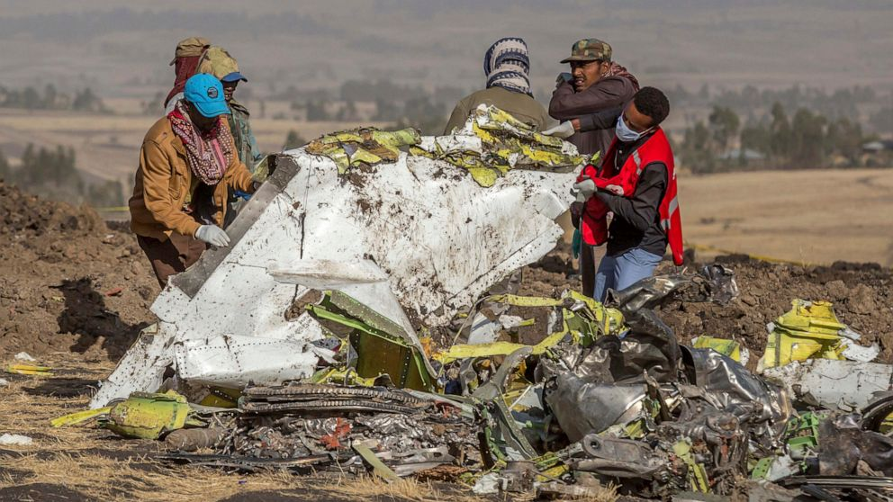
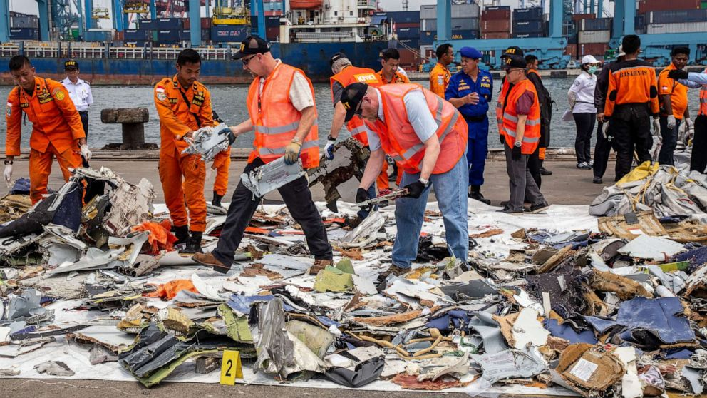

Un Enfoque Basado en Datos
Este Trabajo de Fin de Grado está dedicado a los pasajeros, las familias y las tripulaciones que perdieron la vida en los trágicos accidentes de los vuelos Ethiopian 302 y Lion Air 610.
Su memoria nos impulsa a reflexionar sobre la importancia de la seguridad, la ética y la responsabilidad en el desarrollo e implementación de sistemas autónomos en la aviación.

